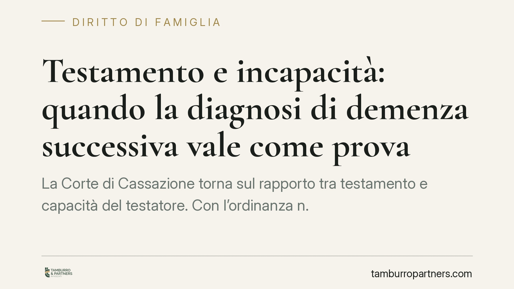

Testamento e incapacità: quando la diagnosi di demenza successiva vale come prova
La Corte di Cassazione torna sul rapporto tra testamento e capacità del testatore. Con l'ordinanza n. 25855/2026 i giudici affermano che una diagnosi di demenza accertata pochi giorni dopo la redazione dell'atto può fondare la presunzione di incapacità, spostando sul beneficiario l'onere di provare il cosiddetto lucido intervallo. Un principio che incide sulla solidità di molti testamenti redatti da persone anziane o malate.

Il caso
La vicenda riguarda un testamento redatto da una testatrice alla quale, pochi giorni dopo, viene diagnosticata una forma di demenza. Da un lato il nipote indicato come beneficiario; dall'altro una diversa beneficiaria indicata in un secondo testamento. La controversia ruota intorno a una domanda semplice ma decisiva: al momento in cui ha disposto dei propri beni, la testatrice era capace di intendere e di volere?
La Cassazione, Sezione II civile, ha stabilito che la prossimità temporale tra la redazione dell'atto e l'accertamento clinico della patologia consente di presumere che l'incapacità fosse già presente nel momento del testamento.
Inquadramento normativo
Il riferimento è l'art. 591 del codice civile, che individua tra i soggetti incapaci di testare chi, pur non interdetto, "si provi essere stato, per qualsiasi causa, anche transitoria, incapace di intendere o di volere al momento in cui fece testamento".
Il principio generale è noto: la capacità di testare si presume. Chi impugna il testamento deve provare l'incapacità. Questo equilibrio, però, non è assoluto. La giurisprudenza distingue tra incapacità transitoria e incapacità permanente e abituale. Quando la malattia che priva della capacità è di natura stabile e progressiva — come le forme di demenza — l'onere della prova si inverte: una volta dimostrato lo stato patologico abituale, è chi vuole far valere il testamento a dover provare che l'atto è stato compiuto in un momento di lucido intervallo, cioè in una fase di temporanea lucidità.
L'ordinanza n. 25855/2026 applica questa logica alla prossimità temporale: se la diagnosi arriva pochi giorni dopo, il giudice può ragionevolmente ritenere che la condizione patologica fosse già in atto al momento del testamento.
Implicazioni pratiche
Il punto delicato è l'inversione dell'onere probatorio. Finché si discute di incapacità transitoria, chi contesta il testamento ha un compito difficile: provare un deficit limitato a un preciso istante. Quando invece si dimostra una patologia degenerativa abituale, la posizione si ribalta.
In concreto, il beneficiario non può limitarsi a confidare sulla presunzione di capacità. Deve essere in grado di dimostrare che, nel giorno e nell'ora del testamento, il testatore era lucido. È una prova tutt'altro che agevole, soprattutto a distanza di tempo e in assenza di riscontri clinici o documentali ravvicinati.
Per chi riceve per testamento da un familiare anziano o malato, la pronuncia è un avvertimento: la validità dell'atto può essere messa in discussione anche da una diagnosi successiva, purché ravvicinata e coerente con un quadro di deterioramento cognitivo.
Per chi intende impugnare, al contrario, la vicinanza temporale tra atto e diagnosi diventa un elemento probatorio di rilievo, da documentare con cartelle cliniche, certificazioni e, se possibile, consulenze medico-legali.
Cosa fare in concreto
- Documentate la condizione cognitiva del testatore nel momento in cui redige l'atto: una valutazione medica contestuale riduce drasticamente il rischio di future contestazioni.
- Preferite il testamento pubblico davanti al notaio quando il testatore è anziano o fragile: la presenza del pubblico ufficiale e dei testimoni rafforza la prova della capacità.
- Conservate ogni riscontro su visite, terapie e diagnosi vicine alla data del testamento: sono decisivi tanto per chi difende l'atto quanto per chi lo contesta.
- Non date per scontata la presunzione di capacità: in presenza di patologie degenerative l'onere può ribaltarsi sul beneficiario.
- Agite tempestivamente in caso di dubbi sulla validità di un testamento: la ricostruzione dello stato di salute è più affidabile quando non è lontana nel tempo.
La pronuncia conferma una tendenza consolidata: la tutela della volontà del testatore non può prescindere dalla sua effettiva lucidità. Valutare per tempo la capacità di chi dispone dei propri beni non è un formalismo, ma una garanzia per tutte le parti coinvolte.
---
*Contributo informativo a cura di Tamburro & Partners - Avv. Giuseppe Tamburro. Non costituisce parere legale.*
Ogni famiglia ha il suo equilibrio.
Separazione, divorzio, affidamento, assegno: se vuoi un confronto riservato su una specifica situazione, scrivi allo studio. Ti rispondiamo entro un giorno lavorativo.